Les photos du robinet
Un bouton enregistre toutes les photos du groupe dans votre galerie. Une seule : appui long dessus.
Les 15 pièces
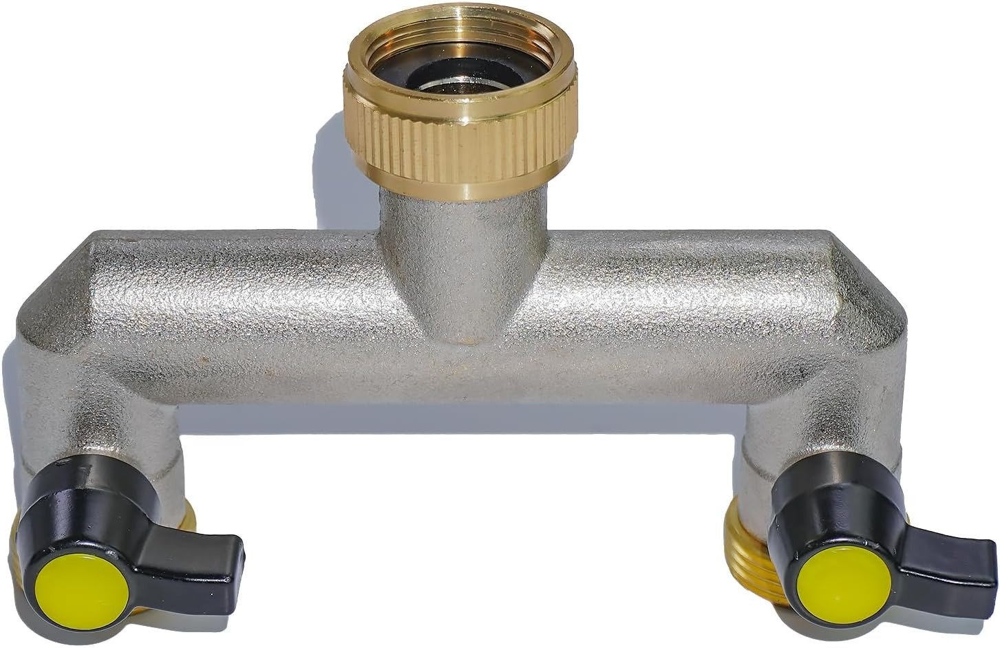
Double sortie, robinet 2 voies 3/4" (BRO3493)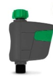
Programmateur Solem BL-NR, 1 voie (SP1151)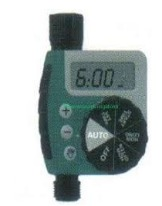
Programmateur Orbit Buddy (AEV11401)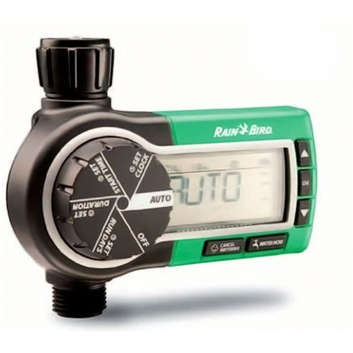
Programmateur Rain Bird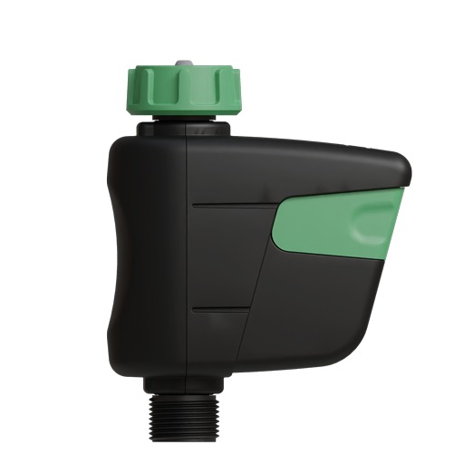
Programmateur Solem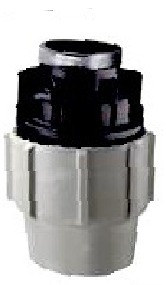
Raccord Plasson taraudé x 3/4", Ø25 ou Ø32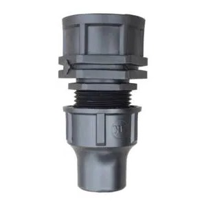
Embout Palaplast 16 x 3/4", debout (MID6362)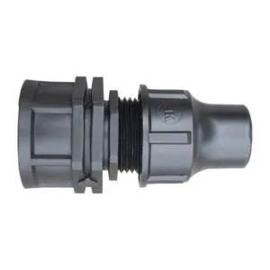
Embout Palaplast 16 x 3/4", à plat (MID6362)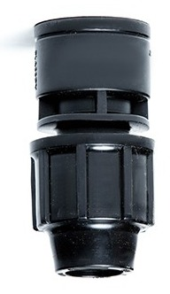
Raccord Plasson 16 rigide x 3/4", debout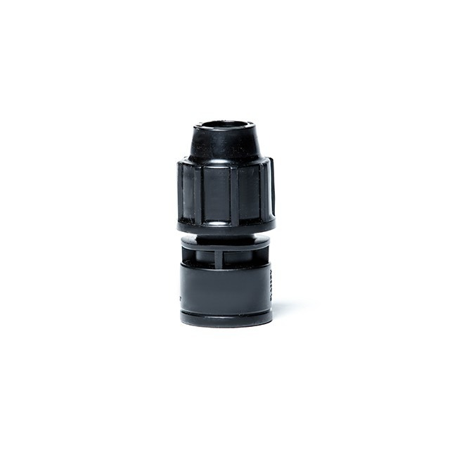
Raccord Plasson 16 rigide x 3/4", à plat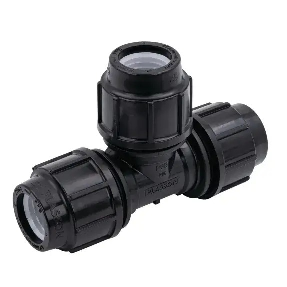
Té égal Plasson 16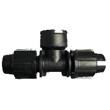
Té taraudé Plasson 16 x 3/4" x 16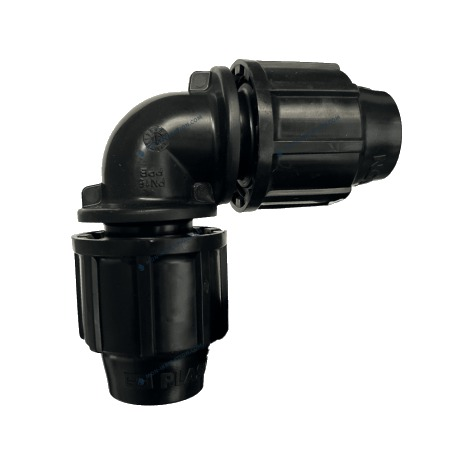
Coude Plasson 16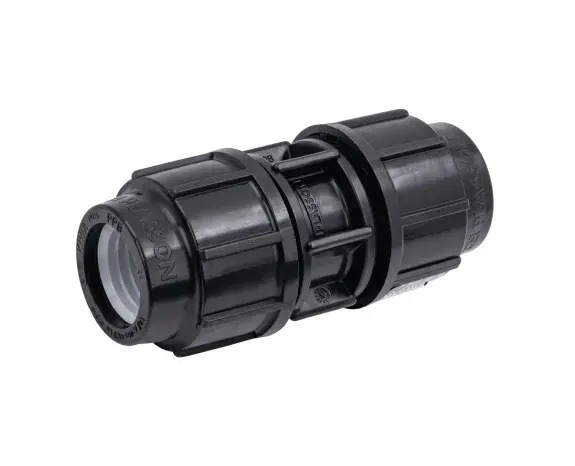
Manchon Plasson 16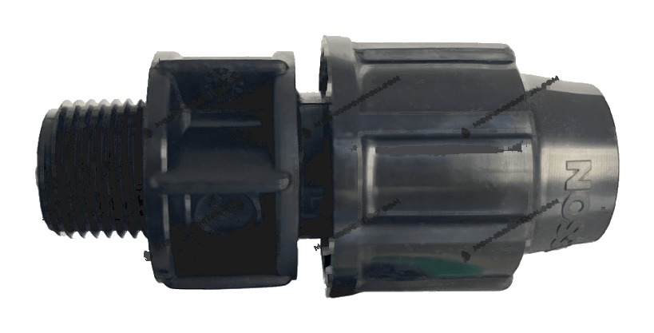
Manchon fileté Plasson 16 x 3/4"Les 9 montages au nez de robinet
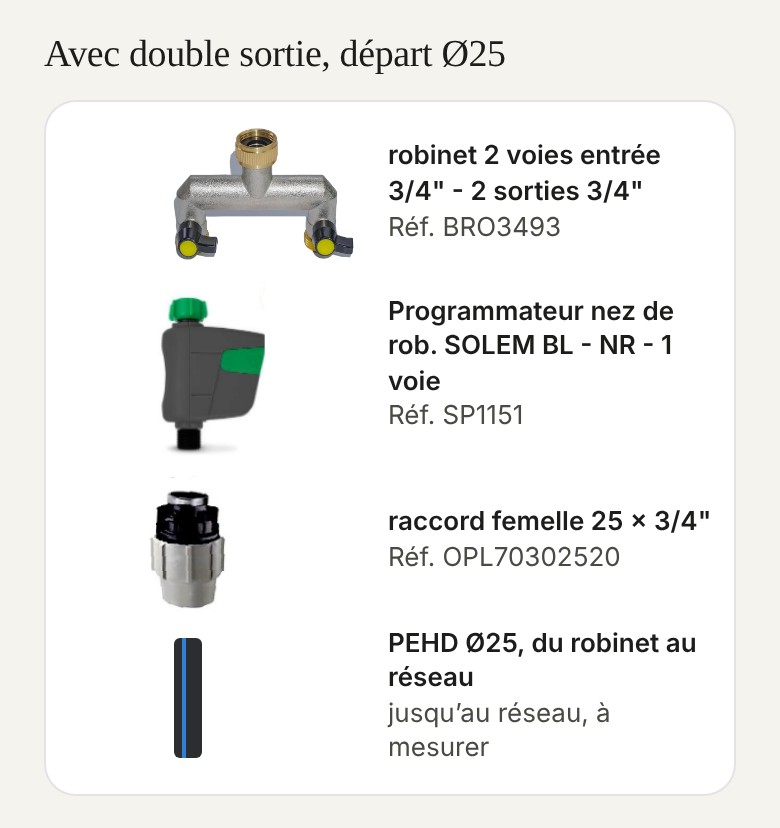
Avec double sortie, départ Ø25Avec double sortie, départ Ø32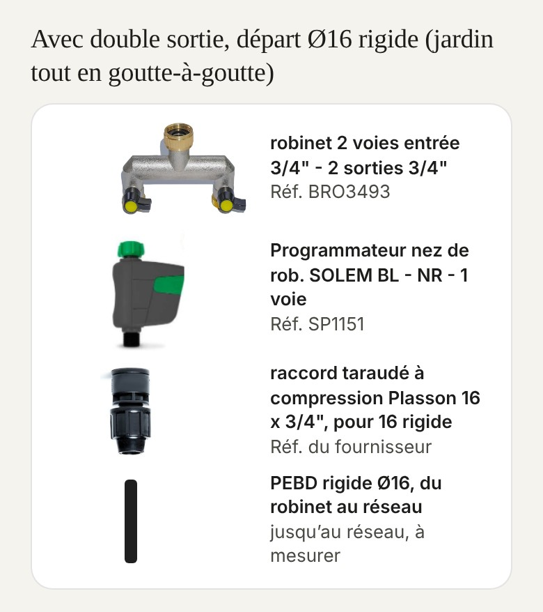
Avec double sortie, départ Ø16 rigide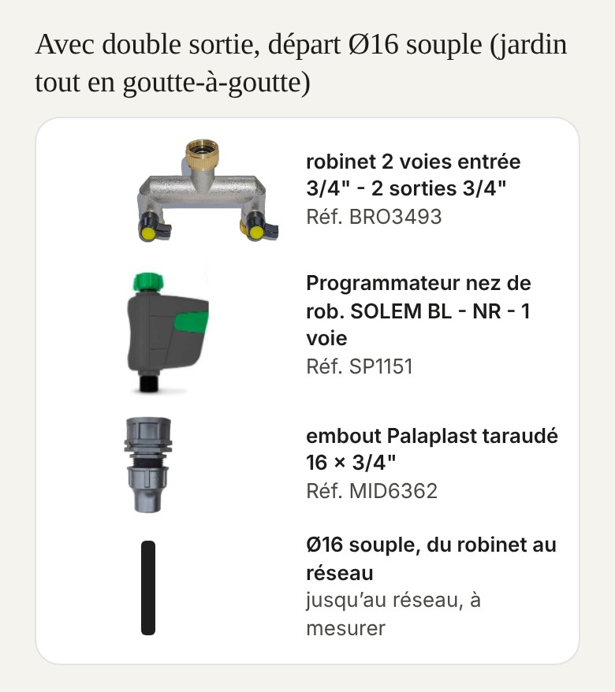
Avec double sortie, départ Ø16 soupleSans double sortie, départ Ø25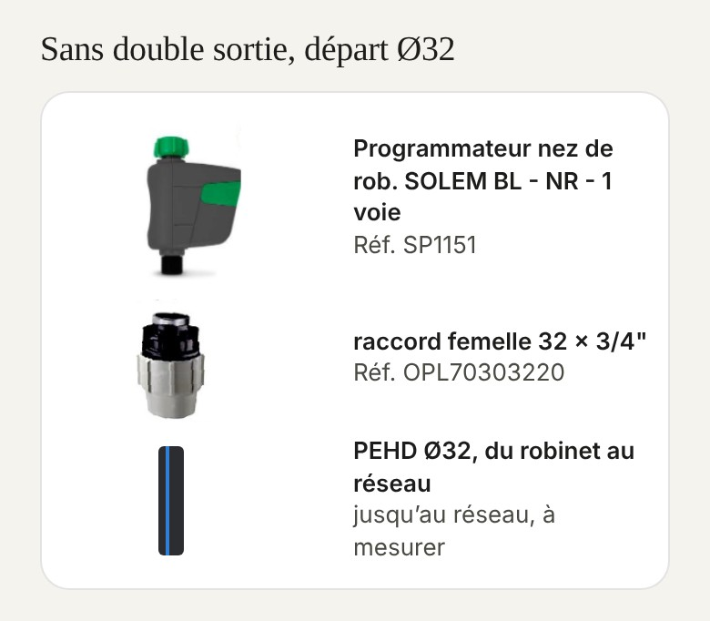
Sans double sortie, départ Ø32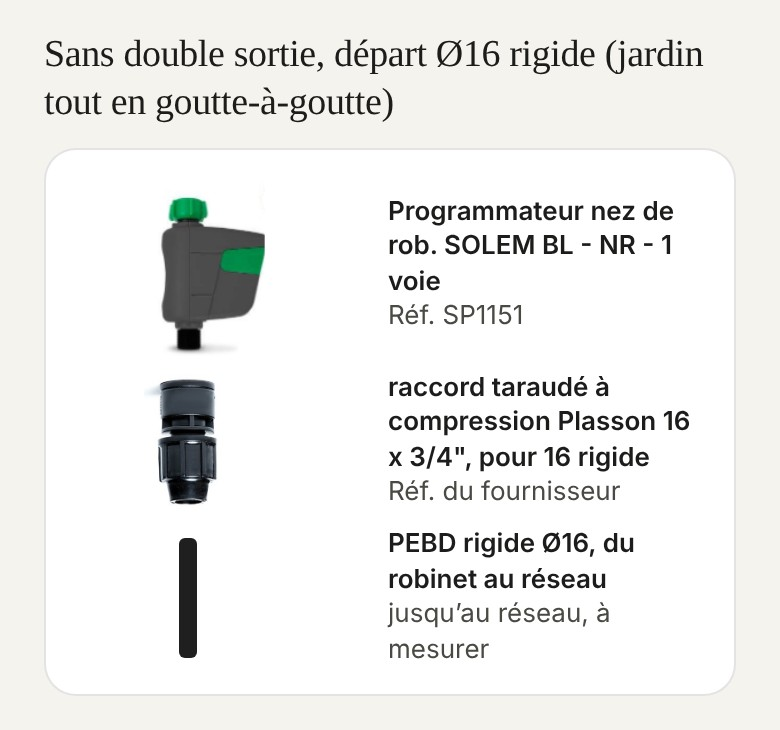
Sans double sortie, départ Ø16 rigide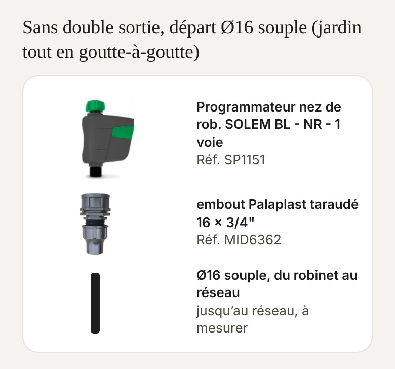
Sans double sortie, départ Ø16 souple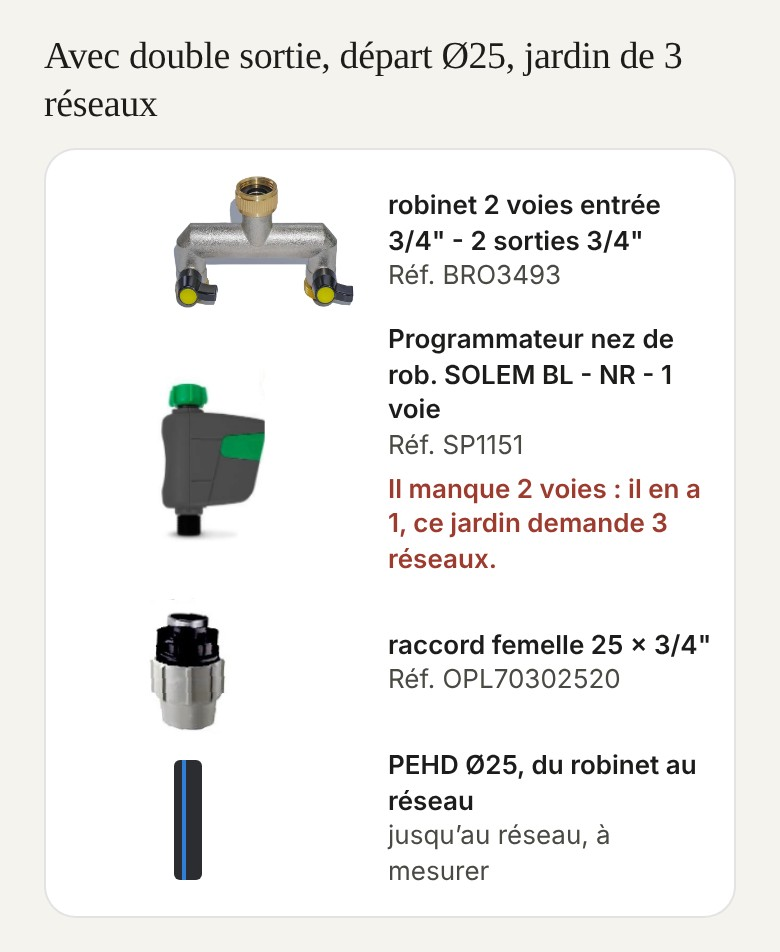
Jardin de 3 réseaux, il manque 2 voies